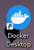
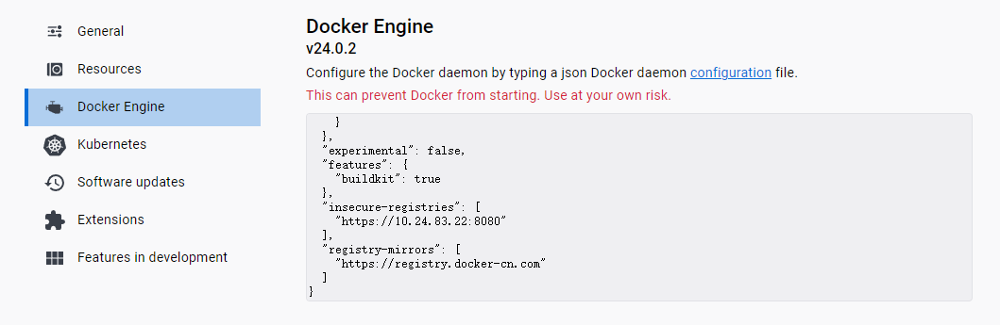
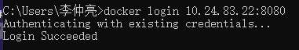
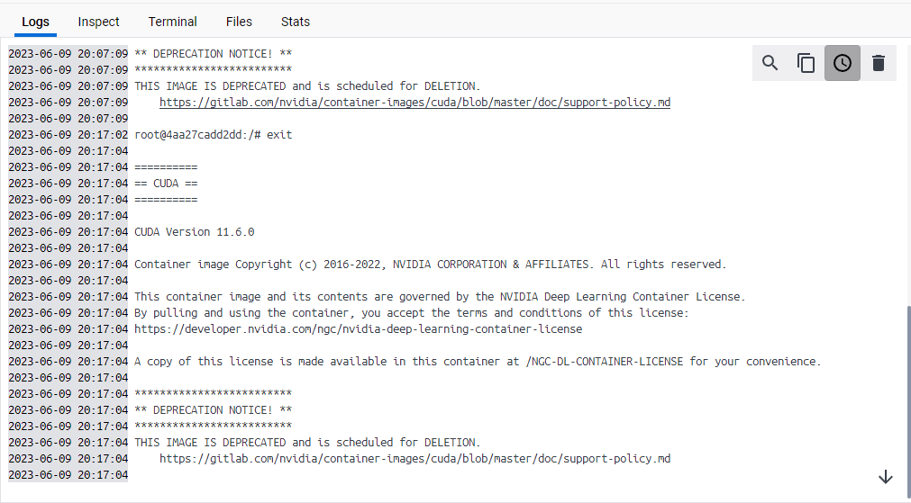
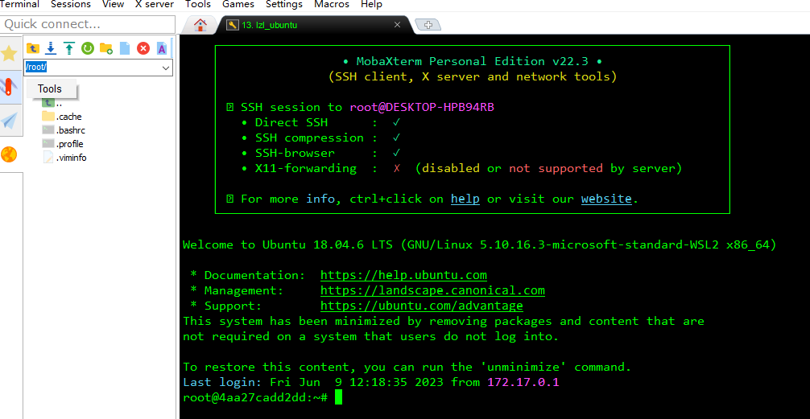
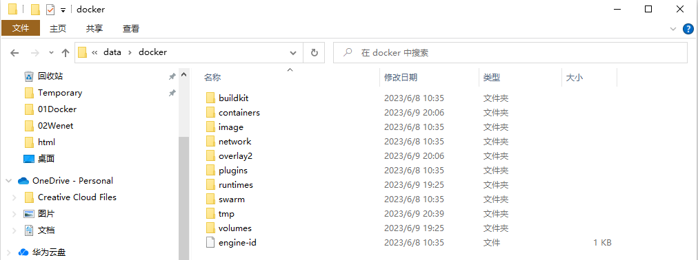

Docker新建用户¶
一、Ubuntu Docker¶
1、在Ubuntu主机上安装docker
sudo apt-get update
sudo apt-get install docker.io
2、拉取 NVIDIA CUDA 镜像
docker pull 10.24.83.22:8080/nvidia/cuda:11.6.0-devel-ubuntu18.04
3、使用命令创建一个 Docker 容器
# --name 字段指定容器名称，-v 字段指定容器挂载主机文件，-p 字段指定容器与主机的端口映射
user=user
docker run -it --gpus all --name ${user} -v /hdd0:/data -p 4000:22 nvidia/cuda:11.6.0-devel-ubuntu18.04 /bin/bash
# wenet
docker run --gpus all --name wenet_server -it -p 8000:8000 -p 8001:8001 -p 8002:8002 --shm-size=1g --ulimit memlock=-1 wenet_server:22.03 /bin/bash
这将创建一个名为“user”的新容器，并将其映射到主机的端口3000，映射机械硬盘 /hdd0 到 /data，需要记住映射的端口号，
4、容器创建完成后，在容器内依次执行以下命令进行初始化
# user 是容器用户名，123456 是容器 sudo 的密码
user=user
chmod 777 /tmp && \
apt-get update && apt-get upgrade -y && \
apt-get install -y xauth ssh vim sudo && \
adduser ${user} --gecos '' --disabled-password && \
echo "${user}:123456" | chpasswd && \
usermod -aG sudo ${user}
5、开机ssh自启动
首先，在 /root 目录下新建一个 start_ssh.sh文件，并给予该文件可执行权限。
vim /root/start_ssh.sh
chmod +x /root/start_ssh.sh
start_ssh.sh 脚本的内容，如下：
#!/bin/bash
LOGTIME=$(date "+%Y-%m-%d %H:%M:%S")
echo "[$LOGTIME] startup run..." >>/root/start_ssh.log
service ssh start >>/root/start_ssh.log
#service mysql start >>/root/star_mysql.log
将start_ssh.sh脚本添加到启动文件中，在 .bashrc 文件末尾加入如下内容
vim /root/.bashrc
# startup run
if [ -f /root/start_ssh.sh ]; then
/root/start_ssh.sh
fi
保存后，等下次重启容器的时候，添加的服务也就跟着重启了。
6、docker自启动
以上操作都完成后，按 Ctrl+D 退出容器，使用 docker ps -a 发现刚刚创建的容器处于 Exited() 状态，首先开启容器：
user=user
docker start ${user}
user 为容器名称，然后设置 docker 开机自启动
docker update --restart=always ${user}
用户名和密码是第 4 步设置的
二、Windows docker-desktop¶
下载 docker-desktop，下载网址：https://www.docker.com/products/docker-desktop/，下载好后的 docker 图标：

cmd 打开 Windows 终端，接下来要连接到我们的私有镜像仓库 10.24.83.22:8080，由于私服采用的是http协议，默认不被Docker信任，需要进行配置，改为https协议，打开 docker-desktop 的设置界面，点击 Docker Engine 按钮，在右边的面板中编辑：
"insecure-registries": ["https://10.24.83.22:8080"],
顺便可以编辑一下 docker 镜像
"registry-mirrors": ["https://registry.docker-cn.com"]
点击 Replay&Restart 应用：

打开 cmd，登录到我们的私有镜像仓库，用户名为 admin，密码为 admin。

显示 Login Succeeded 则表明登录成功
打开 cmd，拉取 Nvidia CUDA 镜像，如果没有显卡则拉取普通 Ubuntu镜像
# 有显卡
docker pull 10.24.83.22:8080/nvidia/cuda:11.6.0-devel-ubuntu18.04
# 无显卡
docker pull 10.24.83.22:8080/ubuntu:20.04
拉取镜像后使用 docker run创建容器，我需要挂载的目录是 E:\Docker_files，这个不同计算机需要挂载的目录不同，需要根据自己的情况进行更改
# 有显卡
docker run -it --gpus all --name lzl -v E:\Docker_files:/files -p 2000:22 10.24.83.22:8080/nvidia/cuda:11.6.0-devel-ubuntu18.04 /bin/bash
# 无显卡（不需要指定 GPU）
docker run -it --name lzl -v E:\Docker_files:/files -p 2000:22 10.24.83.22:8080/ubuntu:20.04 /bin/bash
创建完容器，容器就能处于运行状态了，有五栏可以查看容器的状态，常用的是 Terminal 和 Files。

换源，打开文件，在 \etc\apt\source.list 目录下更换阿里源，以下是阿里源 18.04 内容（20.04的源需要去网上找一下）：
deb http://mirrors.aliyun.com/ubuntu/ bionic main restricted universe multiverse
deb http://mirrors.aliyun.com/ubuntu/ bionic-security main restricted universe multiverse
deb http://mirrors.aliyun.com/ubuntu/ bionic-updates main restricted universe multiverse
deb http://mirrors.aliyun.com/ubuntu/ bionic-proposed main restricted universe multiverse
deb http://mirrors.aliyun.com/ubuntu/ bionic-backports main restricted universe multiverse
deb-src http://mirrors.aliyun.com/ubuntu/ bionic main restricted universe multiverse
deb-src http://mirrors.aliyun.com/ubuntu/ bionic-security main restricted universe multiverse
deb-src http://mirrors.aliyun.com/ubuntu/ bionic-updates main restricted universe multiverse
deb-src http://mirrors.aliyun.com/ubuntu/ bionic-proposed main restricted universe multiverse
deb-src http://mirrors.aliyun.com/ubuntu/ bionic-backports main restricted universe multiverse
更新源
apt update
安装 vim 和 openssh-server
apt install -y vim openssh-server
设置 root ssh，修改配置文件 /etc/ssh/sshd_config，修改：
PermitRootLogin yes
重启 docker 容器。重启 ssh 使配置生效：
service ssh restart
设置密码，终端输入：
# passwd
Enter new UNIX password: 123456
Retype new UNIX password: 123456
passwd: password updated successfully
使用 MobaXterm 连接，主机名输入 localhost，用户名为 root，密码为123456，可以在命令台控制容器。

挂载的文件位于 /files 目录下，这样就在 Windows 里面用容器化技术创建了一个 Ubuntu 容器，相较于虚拟机更加高效。
关于开机自启动 SSH 可以参考第一节的内容。
额外内容
主机没办法直接查看容器文件，在 Linux 系统中，容器默认存储在 /var/docker 里面，如果在 Windows 里面需要修改容器的一些配置时（如挂载目录、端口映射、共享内存等），需要在文件夹中使用路径 \\wsl$\docker-desktop-data\data\docker 打开，和 Linux 系统的 /var/docker 具有同样的内容：
